Справочник по Angular и React · модуль 2 · автоматизация
А2
ИИ-диспетчер
и кнопка «Взять»
На этой странице заявку с доски разбирает языковая модель, которая работает на вашем компьютере. Модель определяет категорию и срочность и пишет короткое описание. n8n записывает категорию в PocketBase и присылает мастеру сообщение в Telegram с кнопкой «Взять». По нажатию кнопки заявка переходит в работу, и доска показывает это без обновления страницы — подпиской из главы 2.5. В конце страницы проверено, как часто модель ошибается, и разобрано, что с этим делать.
- Категория
- Автоматизация, языковая модель
- Уровень
- Начальный
- Что понадобится
- Папка
avtomatizaciyaпосле главы 2.2, бот Telegram и его токен со страницы «Автоматизация» модуля 1, проектzayavkiпосле главы 2.5, около 10 ГБ свободного места на диске и 8 ГБ оперативной памяти - Результат
- Заявка с доски получает категорию от модели и приходит в Telegram с кнопкой; нажатие «Взять» переводит её в работу на доске
Готовые файлы для этой страницы
В архиве папка avtomatizaciya в состоянии конца страницы: compose.yaml с n8n, PocketBase и Ollama, pocketbase/Dockerfile, образец .env.example и два шаблона процессов для вставки в n8n. Распакуйте её в react-kurs вместо прежней: данные n8n, PocketBase и модель хранятся в томах Docker и при замене файлов не пропадают. Проект доски после главы 2.5 — в архиве главы 2.5.
Архив закрыт паролем. После нажатия на кнопку введите пароль — его сообщает преподаватель.
§1Как устроен ИИ-диспетчер
РазбираемсяКто что делает
В большом ИТ-отделе заявки сначала читает диспетчер. Он исправляет категорию, если автор ошибся, помечает срочные и пересказывает суть в одной строке. Потом раздаёт заявки мастерам, и мастер отвечает «беру». Мастеру не нужно читать длинный текст, чтобы понять, его ли это работа.
Диспетчер-человек переспросит автора, если не понял заявку. Модель не переспрашивает: она отвечает всегда, в том числе когда ошибается. Поэтому её ответ — подсказка, и категорию на доске можно исправить.
Новые инструменты этой страницы:
- Языковая модель — программа, которая по тексту запроса продолжает текст ответа. Её обучили на больших объёмах текстов, поэтому она умеет пересказывать и раскладывать текст по категориям. Модель, которую используем, называется qwen2.5:3b: «3b» — три миллиарда параметров, это маленькая модель. Её файл занимает 2,1 ГБ, и она работает без видеокарты.
- Ollama — программа, которая запускает языковые модели на своём компьютере и даёт к ним API по адресу
http://localhost:11434. Запросы к модели не уходят в интернет, данные заявок остаются у вас, и это бесплатно. - Кнопка под сообщением (inline-кнопка) — кнопка, которую бот прикрепляет к своему сообщению в Telegram. При нажатии Telegram сохраняет у себя событие «нажата кнопка» с короткой строкой данных, например
take:ID заявки.
Автоматизация состоит из двух процессов n8n. Первый запускается заявкой с доски, второй — нажатием кнопки. На схеме — оба пути.
Два процесса: заявка → модель → Telegram и кнопка → база → доска
Чёрные стрелки — запросы, которые отправляет n8n. Пунктир — нажатия: Telegram не может сам постучаться в n8n на вашем компьютере, поэтому n8n раз в 10 секунд забирает их сам. Стрелка вверх слева — событие PocketBase, по которому доска меняет статус без F5.
Почему кнопки обрабатываются опросом. Telegram умеет сам отправлять нажатия по адресу, но только на публичный адрес в интернете с HTTPS. У n8n на вашем компьютере такого адреса нет: localhost виден только с этого компьютера. Поэтому n8n раз в 10 секунд сам запрашивает у Telegram новые нажатия методом getUpdates — тем же, которым в модуле 1 узнавали номер чата. Это опрос из главы 2.5, и у него тот же недостаток: нажатие обрабатывается с задержкой до 10 секунд.
Начнём с модели: её нужно запустить и скачать.
§2Ollama и модель
ДелаемЗапускаем Ollama и скачиваем модель
- Дополните compose.yaml
Замените содержимое
avtomatizaciya/compose.yaml. Добавленные строки подсвечены: службаollama, её том и две переменные окружения для n8n.avtomatizaciya/compose.yaml services: n8n: image: n8nio/n8n:2.45.4 ports: - "5678:5678" environment: - GENERIC_TIMEZONE=Europe/Moscow - TZ=Europe/Moscow - N8N_DEFAULT_LOCALE=en - N8N_BLOCK_ENV_ACCESS_IN_NODE=false - TELEGRAM_TOKEN=${TELEGRAM_TOKEN} volumes: - n8n_data:/home/node/.n8n pocketbase: build: ./pocketbase ports: - "8090:8090" volumes: - pb_data:/pb/pb_data ollama: image: ollama/ollama:0.40.12 ports: - "11434:11434" volumes: - ollama_data:/root/.ollama volumes: n8n_data: pb_data: ollama_data: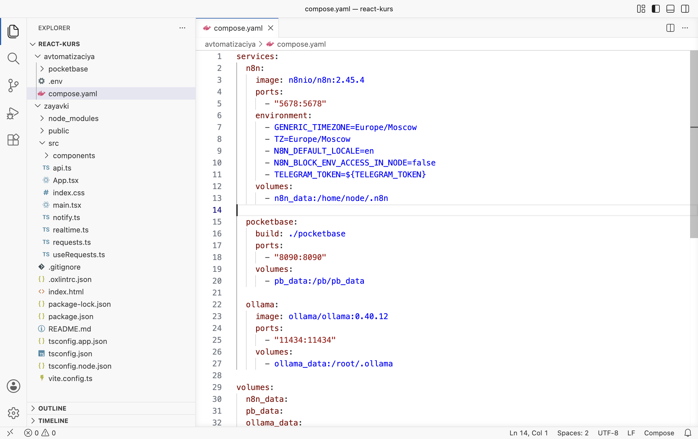
compose.yaml: три службы - Создайте файл .env
В папке
avtomatizaciyaсоздайте файл.env(с точкой в начале, без расширения). Впишите одну строку: после знака=— токен вашего бота от @BotFather из модуля 1, без пробелов и кавычек.avtomatizaciya/.env TELEGRAM_TOKEN=ваш-токен-от-BotFather
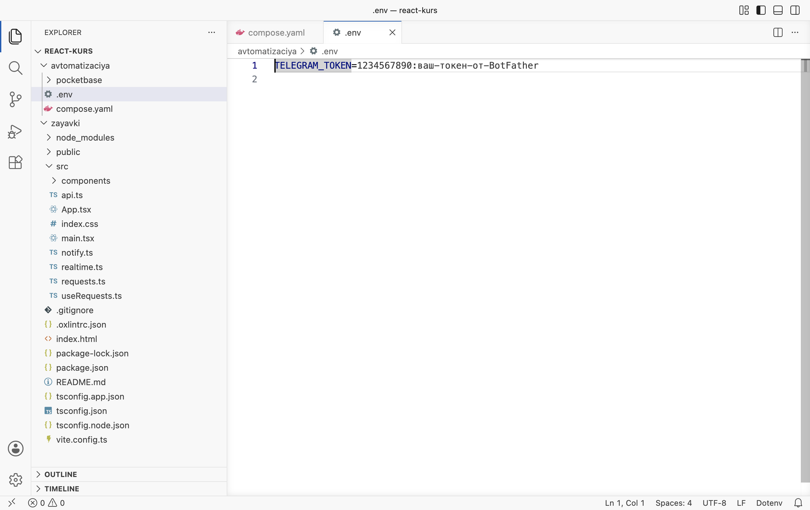
Файл .env рядом с compose.yaml. На кадре — образец вместо токена - Запустите службы
В терминале VS Code перейдите в папку и выполните команды. Docker скачает образ Ollama (на диске он занимает около 7 ГБ) и пересоздаст контейнер n8n с новыми переменными.
Терминал · папка react-kurs cd avtomatizaciya docker compose up -d docker compose ps
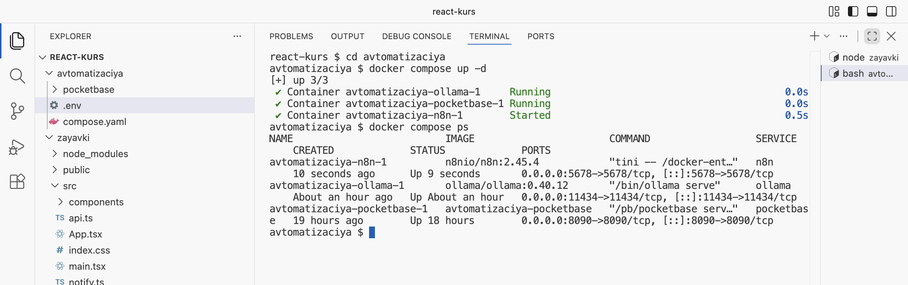
Три контейнера работают: n8n, Ollama, PocketBase - Скачайте модель
Выполните команду. Модель занимает 2,1 ГБ, загрузка идёт несколько минут; терминал показывает проценты.
Терминал · папка avtomatizaciya docker compose exec ollama ollama pull qwen2.5:3b
Если загрузка обрывается или не начинается
Файлы моделей Ollama раздаются с серверов, которые бывают недоступны из российских сетей. Тогда модель ставится из файла с сайта Hugging Face. Откройте в браузере страницу Qwen2.5-3B-Instruct-GGUF и скачайте файл
qwen2.5-3b-instruct-q4_k_m.gguf(2,1 ГБ). Положите его в папкуavtomatizaciyaи выполните две команды: первая копирует файл в контейнер, вторая регистрирует модель под именемqwen2.5:3bи удаляет копию.Терминал · папка avtomatizaciya docker compose cp qwen2.5-3b-instruct-q4_k_m.gguf ollama:/tmp/qwen.gguf docker compose exec ollama sh -c 'printf "FROM /tmp/qwen.gguf\n" > /tmp/Modelfile && ollama create qwen2.5:3b -f /tmp/Modelfile && rm /tmp/qwen.gguf'
После этого файл в папке
avtomatizaciyaможно удалить: модель хранится в томеollama_data. - Проверьте список моделей
Выполните команду. В списке —
qwen2.5:3b.Терминал · папка avtomatizaciya docker compose exec ollama ollama list
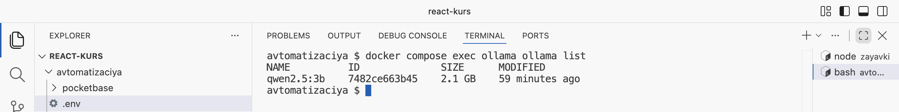
Модель qwen2.5:3b установлена - Задайте модели вопрос
Команда
ollama runотправляет модели текст и печатает ответ. Первый ответ занимает несколько секунд: модель загружается в память.Терминал · папка avtomatizaciya docker compose exec ollama ollama run qwen2.5:3b "Одним словом: к какой категории относится заявка «не включается проектор» — Компьютер, Проектор, Принтер или Интернет?"
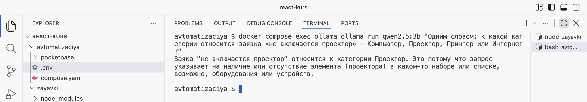
Модель отвечает в терминале
РазбираемсяЧто добавилось в compose.yaml и зачем .env
- Служба
ollama— готовый образ от авторов Ollama, версия закреплена. Порт 11434 открыт для проверки из браузера и терминала. n8n обращается к модели внутри Docker по имени службы:http://ollama:11434, как к PocketBase —http://pocketbase:8090. - Том
ollama_dataхранит скачанные модели. Без него модель пришлось бы качать заново после каждого пересоздания контейнера. TELEGRAM_TOKEN=${TELEGRAM_TOKEN}— переменная окружения для n8n. Запись${…}Docker заменяет значением из файла.envв той же папке. Второму процессу токен нужен в адресе запроса к Telegram, и он прочитает его отсюда.N8N_BLOCK_ENV_ACCESS_IN_NODE=false— разрешение узлам n8n читать переменные окружения. В n8n 2.x доступ к ним по умолчанию закрыт.
Токен вынесен в .env, чтобы его не было в compose.yaml. Файл compose.yaml можно показать преподавателю или выложить в репозиторий. Файл .env — нельзя: в нём пароль бота. Если папка avtomatizaciya попадает в Git, допишите строку .env в .gitignore.
Модель отвечает. Теперь её можно вызвать из процесса n8n.
§3Процесс «ИИ-диспетчер»
ДелаемВставляем первый шаблон
- Снимите с публикации процесс модуля 1
Откройте n8n
http://localhost:5678и процесс «Заявка → Telegram». Нажмите стрелку справа от кнопки Publish и выберите Unpublish. Новый процесс будет принимать заявки на тот же адрес вебхука/webhook/zayavka, а один адрес может слушать только один опубликованный процесс.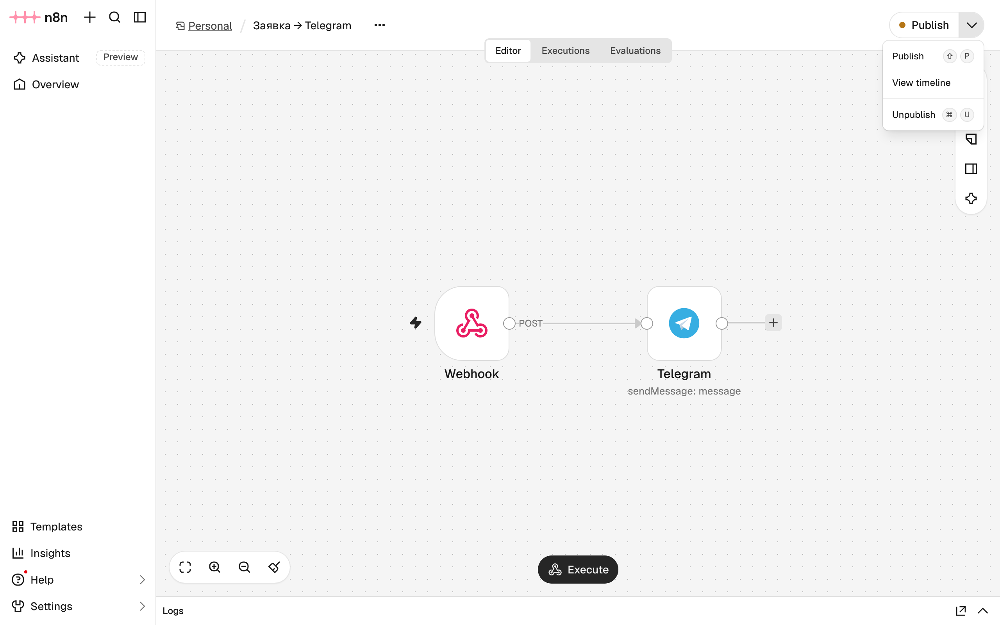
Пункт Unpublish в меню рядом с Publish - Вставьте шаблон
На главной странице n8n создайте новый процесс (+ слева вверху → Workflow). Скопируйте шаблон ниже целиком, щёлкните по пустому холсту и нажмите Ctrl+V. Если n8n спросит «Pasting this from an AI tool?», нажмите Skip. Сохраните: Ctrl+S.
Шаблон процесса «ИИ-диспетчер» { "name": "ИИ-диспетчер", "nodes": [ { "parameters": { "httpMethod": "POST", "path": "zayavka", "options": { "allowedOrigins": "http://localhost:5173" } }, "name": "Webhook", "type": "n8n-nodes-base.webhook", "typeVersion": 2.1, "position": [ 0, 0 ], "webhookId": "zayavka" }, { "parameters": { "method": "POST", "url": "http://ollama:11434/api/chat", "sendBody": true, "specifyBody": "json", "jsonBody": "={{ {\n model: 'qwen2.5:3b',\n stream: false,\n format: {\n type: 'object',\n properties: {\n category: { type: 'string', enum: ['Компьютер', 'Проектор', 'Принтер', 'Интернет'] },\n urgent: { type: 'boolean' },\n summary: { type: 'string' }\n },\n required: ['category', 'urgent', 'summary']\n },\n messages: [\n { role: 'system', content: 'Ты диспетчер ИТ-отдела колледжа. По заявке определи категорию (Компьютер, Проектор, Принтер, Интернет), срочность и напиши краткое описание до 12 слов. Срочно — если срывается занятие или экзамен, пропал интернет у целого кабинета или есть риск для безопасности. Отвечай только JSON.' },\n { role: 'user', content: 'Что случилось: ' + $json.body.title + '\\nКабинет: ' + $json.body.room + '\\nКатегория от автора: ' + $json.body.category + '\\nПодробности: ' + $json.body.details }\n ]\n} }}", "options": { "timeout": 120000 } }, "name": "Модель", "type": "n8n-nodes-base.httpRequest", "typeVersion": 4.2, "position": [ 220, 0 ] }, { "parameters": { "assignments": { "assignments": [ { "id": "a1", "name": "id", "value": "={{ $('Webhook').item.json.body.id }}", "type": "string" }, { "id": "a2", "name": "title", "value": "={{ $('Webhook').item.json.body.title }}", "type": "string" }, { "id": "a3", "name": "room", "value": "={{ $('Webhook').item.json.body.room }}", "type": "string" }, { "id": "a4", "name": "category", "value": "={{ JSON.parse($json.message.content).category }}", "type": "string" }, { "id": "a5", "name": "urgent", "value": "={{ JSON.parse($json.message.content).urgent }}", "type": "boolean" }, { "id": "a6", "name": "summary", "value": "={{ JSON.parse($json.message.content).summary }}", "type": "string" } ] }, "options": {} }, "name": "Ответ модели", "type": "n8n-nodes-base.set", "typeVersion": 3.4, "position": [ 440, 0 ] }, { "parameters": { "method": "PATCH", "url": "=http://pocketbase:8090/api/collections/requests/records/{{ $json.id }}", "sendBody": true, "specifyBody": "json", "jsonBody": "={{ { category: $json.category } }}", "options": {} }, "name": "Категория в базу", "type": "n8n-nodes-base.httpRequest", "typeVersion": 4.2, "position": [ 660, 0 ] }, { "parameters": { "chatId": "", "text": "={{ $('Ответ модели').item.json.urgent ? '🔴 СРОЧНО\\n' : '' }}Заявка: {{ $('Ответ модели').item.json.title }}\nКабинет: {{ $('Ответ модели').item.json.room }} · {{ $('Ответ модели').item.json.category }}\n{{ $('Ответ модели').item.json.summary }}", "replyMarkup": "inlineKeyboard", "inlineKeyboard": { "rows": [ { "row": { "buttons": [ { "text": "Взять", "additionalFields": { "callback_data": "=take:{{ $('Ответ модели').item.json.id }}" } } ] } } ] }, "additionalFields": { "appendAttribution": false } }, "name": "Telegram", "type": "n8n-nodes-base.telegram", "typeVersion": 1.2, "position": [ 880, 0 ] } ], "connections": { "Webhook": { "main": [ [ { "node": "Модель", "type": "main", "index": 0 } ] ] }, "Модель": { "main": [ [ { "node": "Ответ модели", "type": "main", "index": 0 } ] ] }, "Ответ модели": { "main": [ [ { "node": "Категория в базу", "type": "main", "index": 0 } ] ] }, "Категория в базу": { "main": [ [ { "node": "Telegram", "type": "main", "index": 0 } ] ] } } }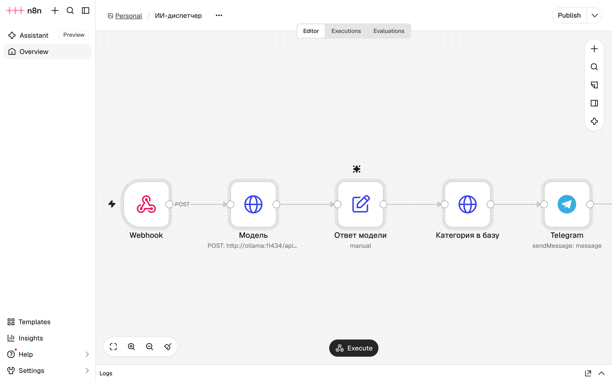
Процесс «ИИ-диспетчер»: пять узлов - Посмотрите узел «Модель»
Дважды щёлкните по узлу Модель. Это запрос POST к Ollama: в поле JSON — текст для модели и описание ответа, которое разобрано ниже. Закройте узел (Esc).
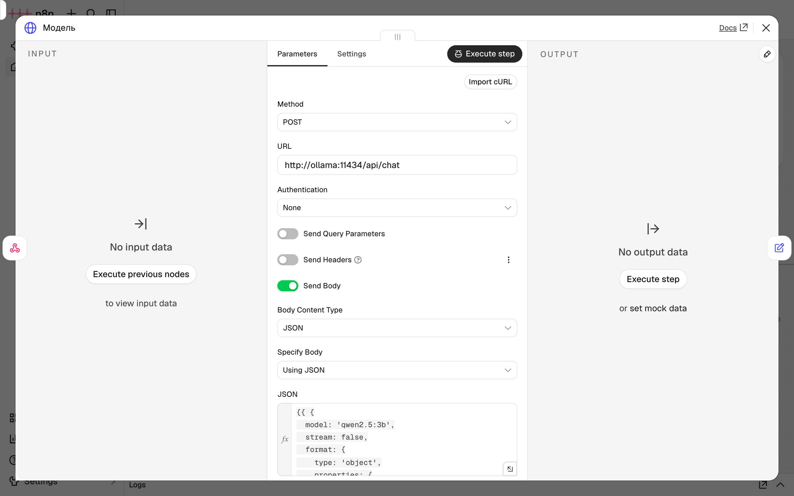
Узел «Модель»: запрос к Ollama - Подключите бота
Дважды щёлкните по узлу Telegram. В поле Credential to connect with должно стоять «Telegram account» — учётные данные бота из модуля 1. Если поле пустое, выберите их в списке. В поле Chat ID впишите номер вашего чата из модуля 1. Закройте узел и сохраните процесс.
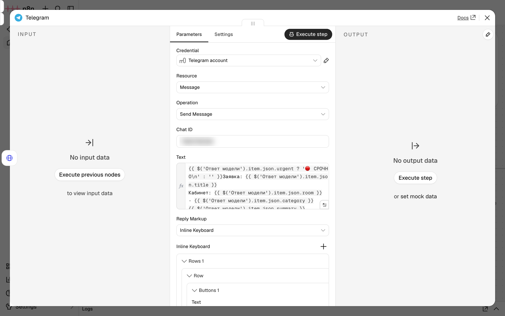
Узел Telegram: бот, номер чата и кнопка «Взять» - Опубликуйте
Нажмите Publish, в окне — ещё раз Publish.
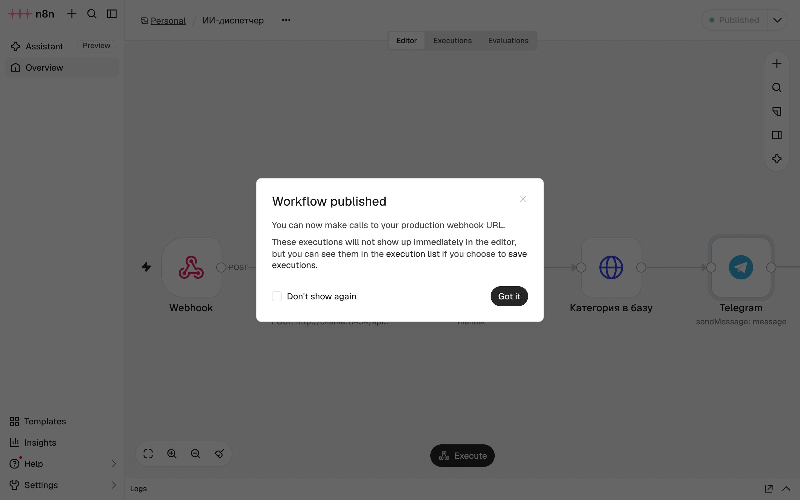
Процесс «ИИ-диспетчер» опубликован
РазбираемсяЧто делает каждый узел
| Узел | Что делает | Что передаёт дальше |
|---|---|---|
| Webhook | Принимает заявку с доски, как в модуле 1. Доска отправляет её после сохранения в PocketBase, поэтому в заявке уже есть id | body: id, title, room, category, details, status |
| Модель | Отправляет заявку в Ollama и ждёт ответа до 2 минут | message.content — ответ модели строкой JSON |
| Ответ модели | Разбирает строку ответа и собирает поля для следующих узлов | id, title, room, category, urgent, summary |
| Категория в базу | Запрос PATCH к PocketBase: меняет категорию заявки. Правило Update из главы 2.2 разрешает менять категорию | Изменённую запись |
| Telegram | Отправляет сообщение с кнопкой «Взять». Данные кнопки — take: и id заявки | Ответ Telegram |
Основная часть процесса — тело запроса к модели в узле «Модель». В нём три части:
model— имя модели в Ollama:qwen2.5:3b.messages— переписка с моделью. Сообщение с рольюsystem— инструкция: «Ты диспетчер ИТ-отдела колледжа. По заявке определи категорию, срочность и напиши краткое описание до 12 слов…». Сообщение с рольюuser— сама заявка: что случилось, кабинет, категория от автора, подробности. Инструкцию для модели называют промптом.format— описание ответа: объект с полямиcategory(одно из четырёх значений),urgent(да или нет) иsummary(строка). Это JSON-схема. Ollama заставляет модель отвечать строго по ней, поэтому ответ всегда можно разобрать, а категория всегда из списка — как поле Select в PocketBase.
Ответ модели приходит строкой, например {"category": "Проектор", "urgent": true, "summary": "…"}. Узел «Ответ модели» превращает её в объект выражением JSON.parse($json.message.content) и берёт из него поля. JSON.parse — обратная операция к JSON.stringify из главы 1.7: строку JSON превращает в объект. Остальные поля узел берёт из вебхука: запись $('Webhook').item.json.body.id значит «поле id из данных, которые пришли в узел Webhook».
Сообщение с кнопкой уходит в Telegram. Нажатие кнопки обрабатывает второй процесс.
§4Процесс «Кнопка «Взять»»
ДелаемВставляем второй шаблон
- Вставьте шаблон
Создайте ещё один процесс и вставьте в него шаблон ниже так же, как первый. Сохраните.
Шаблон процесса «Кнопка «Взять»» { "name": "Кнопка «Взять»", "nodes": [ { "parameters": { "rule": { "interval": [ { "field": "seconds", "secondsInterval": 10 } ] } }, "name": "Каждые 10 секунд", "type": "n8n-nodes-base.scheduleTrigger", "typeVersion": 1.2, "position": [ 0, 0 ] }, { "parameters": { "url": "=https://api.telegram.org/bot{{ $env.TELEGRAM_TOKEN }}/getUpdates", "sendQuery": true, "queryParameters": { "parameters": [ { "name": "timeout", "value": "0" }, { "name": "allowed_updates", "value": "[\"callback_query\"]" } ] }, "options": {} }, "name": "Нажатия", "type": "n8n-nodes-base.httpRequest", "typeVersion": 4.2, "position": [ 220, 0 ] }, { "parameters": { "conditions": { "options": { "caseSensitive": true, "leftValue": "", "typeValidation": "strict", "version": 2 }, "conditions": [ { "id": "c1", "leftValue": "={{ $json.result.length }}", "rightValue": 0, "operator": { "type": "number", "operation": "gt" } } ], "combinator": "and" }, "options": {} }, "name": "Есть нажатия?", "type": "n8n-nodes-base.if", "typeVersion": 2.2, "position": [ 440, 0 ] }, { "parameters": { "url": "=https://api.telegram.org/bot{{ $env.TELEGRAM_TOKEN }}/getUpdates", "sendQuery": true, "queryParameters": { "parameters": [ { "name": "offset", "value": "={{ $json.result[$json.result.length - 1].update_id + 1 }}" }, { "name": "timeout", "value": "0" } ] }, "options": {} }, "name": "Отметить прочитанными", "type": "n8n-nodes-base.httpRequest", "typeVersion": 4.2, "position": [ 660, -140 ] }, { "parameters": { "fieldToSplitOut": "result", "options": {} }, "name": "По одному", "type": "n8n-nodes-base.splitOut", "typeVersion": 1, "position": [ 660, 100 ] }, { "parameters": { "assignments": { "assignments": [ { "id": "b1", "name": "id", "value": "={{ $json.callback_query.data.replace('take:', '') }}", "type": "string" }, { "id": "b2", "name": "queryId", "value": "={{ $json.callback_query.id }}", "type": "string" }, { "id": "b3", "name": "chatId", "value": "={{ $json.callback_query.message.chat.id }}", "type": "string" }, { "id": "b4", "name": "messageId", "value": "={{ $json.callback_query.message.message_id }}", "type": "string" }, { "id": "b5", "name": "text", "value": "={{ $json.callback_query.message.text }}", "type": "string" }, { "id": "b6", "name": "master", "value": "={{ $json.callback_query.from.first_name }}", "type": "string" } ] }, "options": {} }, "name": "Кто и что нажал", "type": "n8n-nodes-base.set", "typeVersion": 3.4, "position": [ 880, 100 ] }, { "parameters": { "method": "PATCH", "url": "=http://pocketbase:8090/api/collections/requests/records/{{ $json.id }}", "sendBody": true, "specifyBody": "json", "jsonBody": "={{ { status: 'В работе' } }}", "options": {} }, "name": "Статус в базу", "type": "n8n-nodes-base.httpRequest", "typeVersion": 4.2, "position": [ 1100, 100 ] }, { "parameters": { "resource": "callback", "queryId": "={{ $('Кто и что нажал').item.json.queryId }}", "additionalFields": { "text": "Заявка ваша" } }, "name": "Ответ на нажатие", "type": "n8n-nodes-base.telegram", "typeVersion": 1.2, "position": [ 1320, 100 ], "onError": "continueRegularOutput" }, { "parameters": { "operation": "editMessageText", "chatId": "={{ $('Кто и что нажал').item.json.chatId }}", "messageId": "={{ $('Кто и что нажал').item.json.messageId }}", "text": "={{ $('Кто и что нажал').item.json.text }}\n\n✅ Взял: {{ $('Кто и что нажал').item.json.master }}", "additionalFields": {} }, "name": "Изменить сообщение", "type": "n8n-nodes-base.telegram", "typeVersion": 1.2, "position": [ 1540, 100 ], "onError": "continueRegularOutput" } ], "connections": { "Каждые 10 секунд": { "main": [ [ { "node": "Нажатия", "type": "main", "index": 0 } ] ] }, "Нажатия": { "main": [ [ { "node": "Есть нажатия?", "type": "main", "index": 0 } ] ] }, "Есть нажатия?": { "main": [ [ { "node": "Отметить прочитанными", "type": "main", "index": 0 }, { "node": "По одному", "type": "main", "index": 0 } ], [] ] }, "По одному": { "main": [ [ { "node": "Кто и что нажал", "type": "main", "index": 0 } ] ] }, "Кто и что нажал": { "main": [ [ { "node": "Статус в базу", "type": "main", "index": 0 } ] ] }, "Статус в базу": { "main": [ [ { "node": "Ответ на нажатие", "type": "main", "index": 0 } ] ] }, "Ответ на нажатие": { "main": [ [ { "node": "Изменить сообщение", "type": "main", "index": 0 } ] ] } } }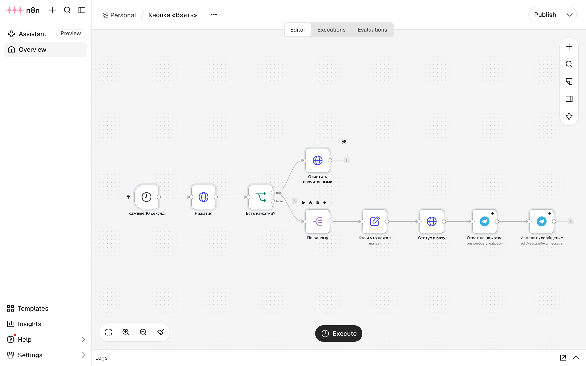
Процесс «Кнопка «Взять»» - Посмотрите узел «Нажатия»
Дважды щёлкните по узлу Нажатия. В адресе — выражение
{{ $env.TELEGRAM_TOKEN }}: n8n подставит токен из файла.env. Узлы Telegram в этом процессе подключились к учётным данным бота сами; если у них поле Credential пустое, выберите «Telegram account».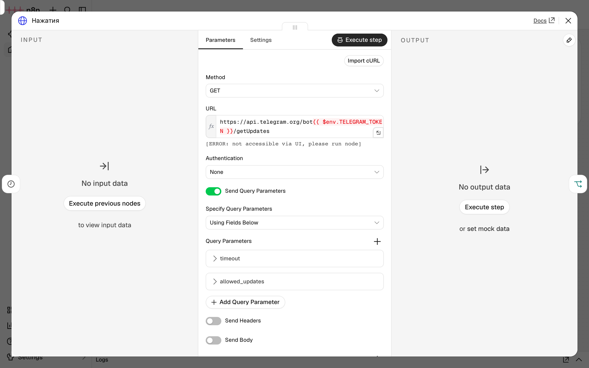
Узел «Нажатия»: запрос getUpdates с токеном из .env - Опубликуйте
Нажмите Publish и подтвердите. С этого момента процесс запускается каждые 10 секунд.
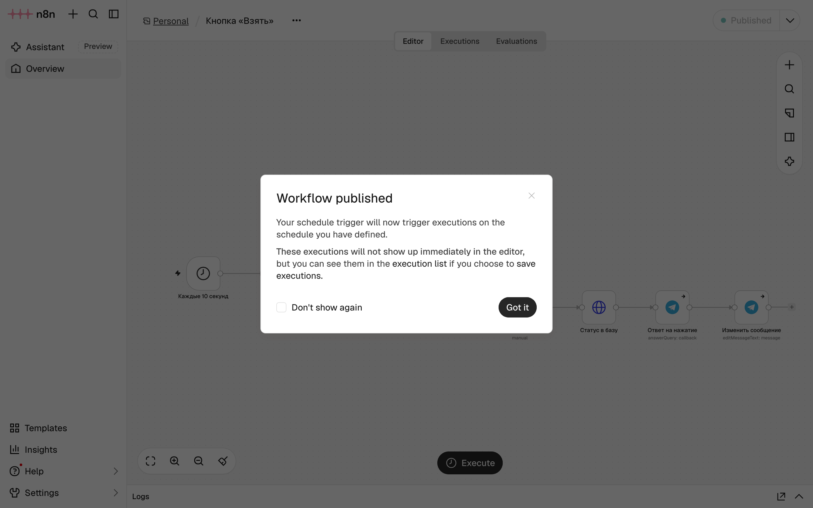
Процесс «Кнопка «Взять»» опубликован
РазбираемсяКак обрабатываются нажатия
Telegram хранит нажатия кнопок, пока их не заберут, — как почтовый ящик. Метод getUpdates возвращает всё, что лежит в ящике, массивом result. У каждого элемента есть номер update_id, а внутри — callback_query: кто нажал, на какое сообщение и какие данные были у кнопки.
| Узел | Что делает |
|---|---|
| Каждые 10 секунд | Запускает процесс по расписанию |
| Нажатия | Запрос getUpdates: что лежит в ящике. allowed_updates — брать только нажатия кнопок |
| Есть нажатия? | Условие: в result больше нуля элементов. Если нет, процесс заканчивается |
| Отметить прочитанными | Ещё один getUpdates с offset = последний update_id + 1. Так Telegram узнаёт, что всё до этого номера забрано, и больше не отдаёт эти нажатия |
| По одному | Раскладывает массив result на отдельные элементы: следующие узлы выполнятся для каждого нажатия |
| Кто и что нажал | Берёт из нажатия id заявки (данные кнопки без take:), имя мастера, номер чата и сообщения |
| Статус в базу | PATCH к PocketBase: статус «В работе». Доска получит событие update |
| Ответ на нажатие | Сообщает Telegram, что нажатие обработано, и показывает мастеру «Заявка ваша» |
| Изменить сообщение | Дописывает в сообщение «✅ Взял: имя». Кнопка пропадает: новый текст отправлен без неё |
У двух последних узлов включена настройка On Error → Continue: при ошибке процесс не останавливается. Она нужна на случай двойного нажатия. Если мастер нажал кнопку дважды, до обработки в ящике оказываются два нажатия. Первое меняет сообщение, второе пытается записать тот же текст, и Telegram отвечает ошибкой «message is not modified» — «сообщение не изменилось». Это случилось при проверке этой страницы.
Оба процесса опубликованы. Остаётся отправить заявку с доски и пройти весь путь.
§5Проверка: от заявки до нажатия
ДелаемЗаявка, модель, кнопка
- Отправьте заявку
Проверьте, что доска запущена (
npm run devв папкеzayavki), и откройтеhttp://localhost:5173/. Добавьте заявку: «Не показывает экран на стене», кабинет 214, категория «Компьютер», подробности «Через 10 минут экзамен, изображения на стене нет.».Заявка добавлена, уведомление отправлено в n8n - Получите сообщение
Через несколько секунд бот присылает сообщение: срочность, заявка, кабинет, категория от модели и её краткое описание. Под сообщением — кнопка Взять.
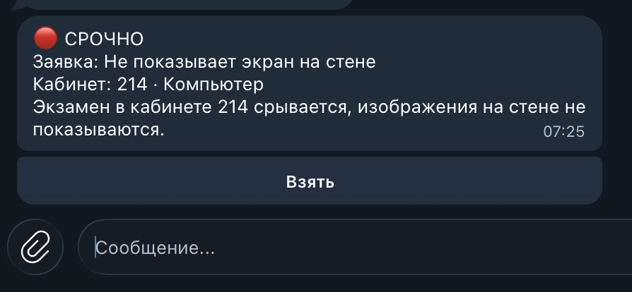
Сообщение бота с кнопкой «Взять» - Посмотрите ответ модели в n8n
В n8n откройте процесс «ИИ-диспетчер», вкладку Executions, и выберите последний запуск. Дважды щёлкните по узлу Ответ модели: справа — поля, которые вернула модель.
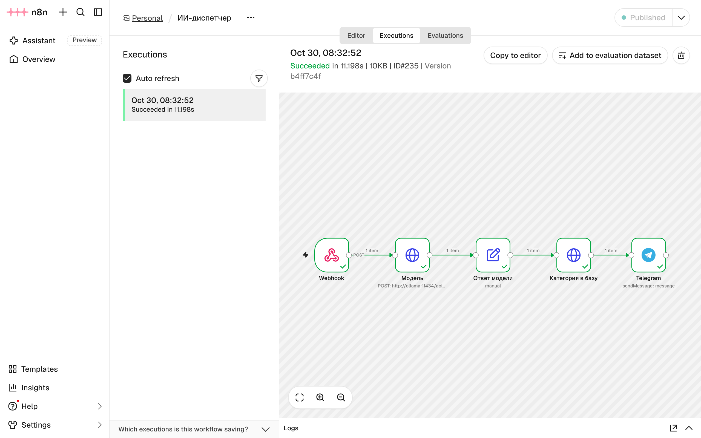
Запуск процесса: все узлы выполнены 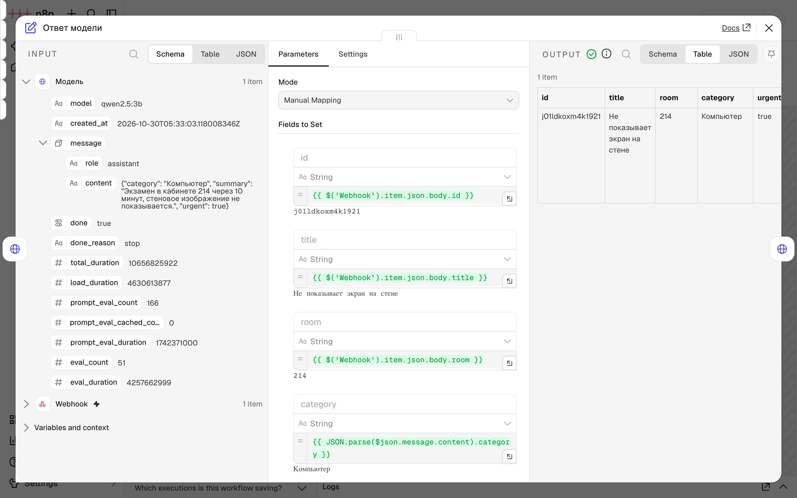
Ответ модели: категория, срочность, краткое описание - Нажмите «Взять»
В Telegram нажмите кнопку Взять один раз. Пока n8n не забрал нажатие, Telegram показывает «Загрузка…» — до 10 секунд.
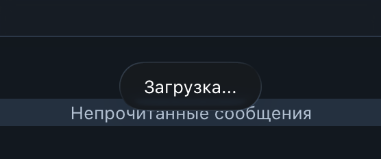
Telegram ждёт ответа на нажатие - Посмотрите сообщение и доску
Сообщение изменилось: кнопки нет, внизу «✅ Взял» и ваше имя в Telegram. На доске заявка перешла в «В работе» без обновления страницы.
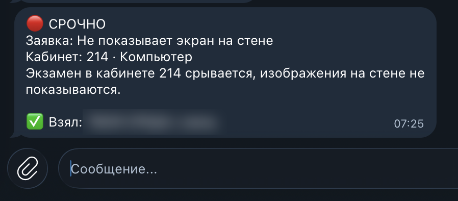
Сообщение после нажатия: «✅ Взял: …» 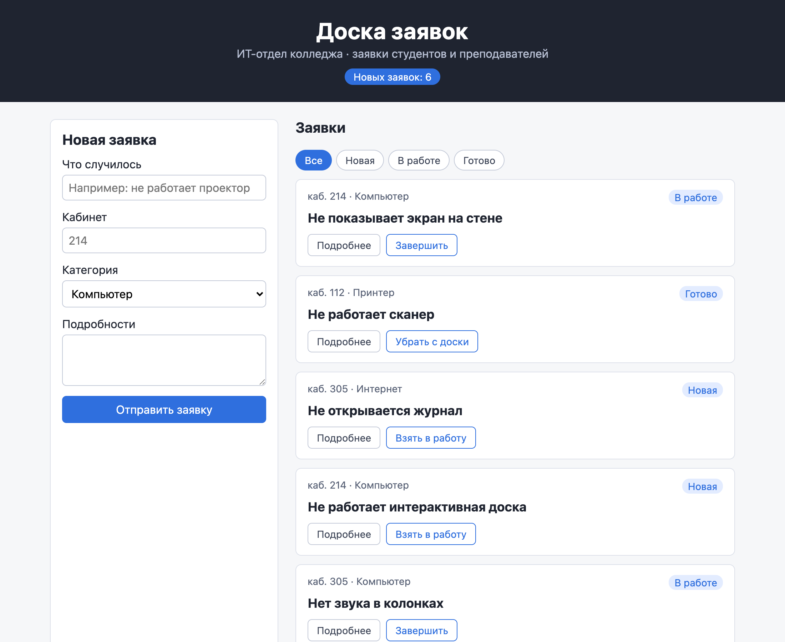
Доска: заявка в работе
РазбираемсяНасколько можно доверять модели
В этой заявке модель ошиблась: «экран на стене» — это проектор, а она оставила категорию «Компьютер», которую выбрал автор. Срочность она определила верно: до экзамена 10 минут.
Чтобы понять, как часто так бывает, модель проверили на шести заявках, для которых правильный ответ известен. В двух заявках автор выбрал категорию неверно.
| Заявка | Категория автора | Ответ модели | Верно | Срочно |
|---|---|---|---|---|
| Не работает проектор, через 10 минут экзамен | Проектор | Проектор | да | да, верно |
| Нет интернета во всём кабинете | Компьютер | Интернет | да | да, верно |
| Замятие бумаги, не срочно | Принтер | Принтер | да | нет, верно |
| Колёсико мыши иногда не крутится | Интернет | Интернет | нет: Компьютер | нет, верно |
| Розетка под компьютером искрит | Компьютер | Компьютер | да | да, верно |
| Не показывает экран на стене, экзамен | Компьютер | Компьютер | нет: Проектор | да, верно |
Категория верна в 4 заявках из 6, срочность — в 6 из 6. Обе ошибки одинаковые: модель повторила неверную категорию автора. Одну ошибку исправить она смогла («Нет интернета» вместо «Компьютер»), две — нет. На шести заявках это не точная оценка, но вывод из неё ясен: маленькая модель полезна как помощник, а решение остаётся за человеком. Поэтому правило Update разрешает менять категорию, и мастер исправляет её в панели PocketBase — доска покажет исправление сразу, как в главе 2.5.
Каждый ответ занял около 2 секунд, первый — около 7: модель загружалась в память. Это на ноутбуке без видеокарты. На компьютере с меньшим объёмом памяти ответ займёт больше времени, а модели больше 3b могут не поместиться в память вовсе.
Файлы после страницы
Тот же архив, что в начале страницы. Процессы n8n, модель и записи PocketBase архив не содержит: они хранятся в томах Docker и создаются шагами страницы. Файл .env с токеном создайте сами по образцу .env.example.
Архив закрыт паролем. После нажатия на кнопку введите пароль — его сообщает преподаватель.
§6Частые ошибки
| Что видно | Почему | Что сделать |
|---|---|---|
ollama pull обрывается или долго стоит на 0% | Сервер файлов Ollama недоступен из вашей сети | Поставить модель из файла Hugging Face, как в шаге «Скачайте модель» |
Публикация не проходит: n8n сообщает о конфликте вебхука zayavka | Процесс модуля 1 ещё опубликован | Снять его с публикации: Unpublish |
Узел «Модель»: model 'qwen2.5:3b' not found | Модель не скачана или скачана под другим именем | docker compose exec ollama ollama list; скачать модель |
| Узел «Модель» работает больше минуты | Модели не хватает оперативной памяти | Закрыть лишние программы; в Docker Desktop выделить больше памяти |
Узел «Нажатия»: "error_code":404,"description":"Not Found" | В адресе нет токена: файла .env нет или n8n запущен до его создания | Проверить .env, выполнить docker compose up -d |
Узел «Нажатия»: ошибка о запрете доступа к $env | Нет строки N8N_BLOCK_ENV_ACCESS_IN_NODE=false | Сверить compose.yaml, выполнить docker compose up -d |
Узел «Изменить сообщение»: message is not modified | Кнопку нажали дважды | Ничего: настройка On Error → Continue пропускает эту ошибку |
| Кнопка нажата, а статус на доске не меняется | Процесс «Кнопка «Взять»» не опубликован, или на доске нет подписки из главы 2.5 | Проверить публикацию и вкладку Executions; сверить проект с архивом главы 2.5 |
§7Проверьте себя
Зачем запросу к модели поле format?
Оно описывает ответ JSON-схемой. Ollama заставляет модель отвечать строго по ней: всегда объект с полями category, urgent, summary, категория — из списка. Без схемы модель могла бы ответить свободным текстом, и узел «Ответ модели» не смог бы его разобрать.
Почему нажатия кнопки забираются опросом раз в 10 секунд?
Сам Telegram отправляет нажатия только на публичный адрес с HTTPS. У n8n на своём компьютере такого адреса нет, поэтому n8n сам запрашивает нажатия методом getUpdates.
Что будет, если убрать узел «Отметить прочитанными»?
Telegram будет отдавать те же нажатия при каждом запросе. Каждые 10 секунд процесс заново менял бы статус и пытался изменить сообщение.
Почему токен лежит в .env, а не прямо в адресе узла «Нажатия»?
Шаблон процесса и compose.yaml можно передавать другим и выкладывать. Токен — пароль бота, и он хранится в одном файле, который никуда не попадает.
Модель поставила неверную категорию. Как её исправить и увидят ли это другие?
Изменить категорию в панели PocketBase. Правило Update разрешает менять категорию, а доска получает событие update и показывает исправление во всех открытых окнах.
Добавьте в сообщение бота строку «Автор указал: …» с категорией, которую выбрал автор. Где её взять?
Из данных вебхука: {{ $('Webhook').item.json.body.category }}. Узел «Категория в базу» уже записал в базу ответ модели, а в вебхуке осталась категория автора.
Шпаргалка
docker compose exec ollama ollama pull qwen2.5:3bdocker compose exec ollama ollama listdocker compose exec ollama ollama run qwen2.5:3b "…"POST http://ollama:11434/api/chatformat: { type: 'object', properties: … }JSON.parse(строка){{ $env.TELEGRAM_TOKEN }}getUpdates, затем offset = последний + 1Итог страницы
Заявку с доски разбирает языковая модель qwen2.5:3b, запущенная в Ollama на своём компьютере: данные не уходят в интернет, и это бесплатно. Процесс «ИИ-диспетчер» отправляет заявку модели с промптом и JSON-схемой ответа, записывает категорию в PocketBase и присылает мастеру сообщение с кнопкой «Взять». Процесс «Кнопка «Взять»» раз в 10 секунд забирает нажатия из Telegram методом getUpdates, переводит заявку в работу и меняет сообщение. Доска показывает новый статус по подписке из главы 2.5. Модель ошибается: на шести проверочных заявках категория верна в четырёх, срочность — во всех. Поэтому её ответ — подсказка, и категорию можно исправить в панели.
Источники
- github.com — Ollama API
- ollama.com — Structured outputs производитель
- huggingface.co — Qwen2.5-3B-Instruct-GGUF
- core.telegram.org — Bot API: getUpdates
- core.telegram.org — Bot API: InlineKeyboardMarkup
- docs.n8n.io — HTTP Request node